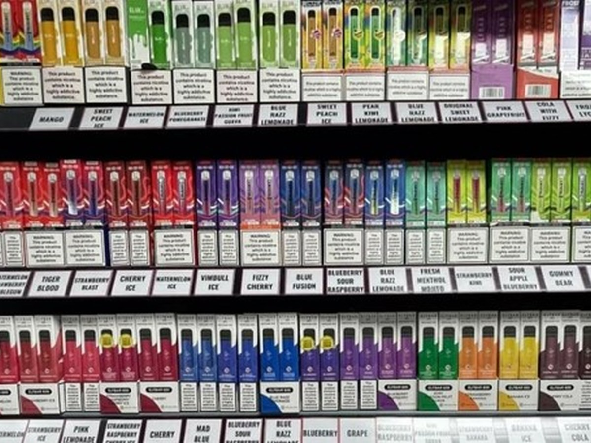

News · October 2023
University research empowers local community to shape smoking cessation services

The University of Aberdeen published the study’s findings during Challenge Poverty Week, 2–8 October 2023.
The release set out what community partners in Banff and Fraserburgh had identified: increased financial stress compounding mental health pressures, alongside the growing availability and acceptability of tobacco and related products. It reported NHS Grampian’s commitment to work closely with communities experiencing multiple deprivation so that services reach the people who need them.
Amanda Stephen of Turning Point Scotland described creating an environment of inclusion for people to open up safely, and noted that a peer support service was a key suggestion from participants. Chris Littlejohn of NHS Grampian said the project had shown how people can be given genuine influence over the way services are delivered. Sheila Duffy of ASH Scotland pointed to the finding underneath it all: quit attempts made with support succeed at similar rates across every level of deprivation.
All news